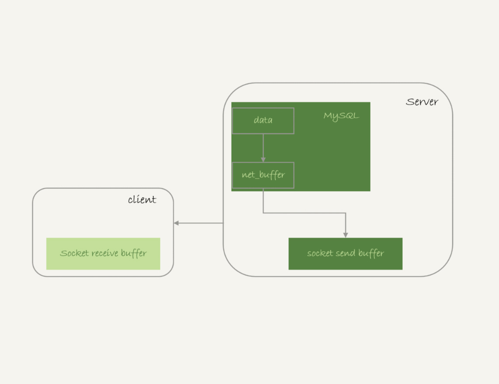
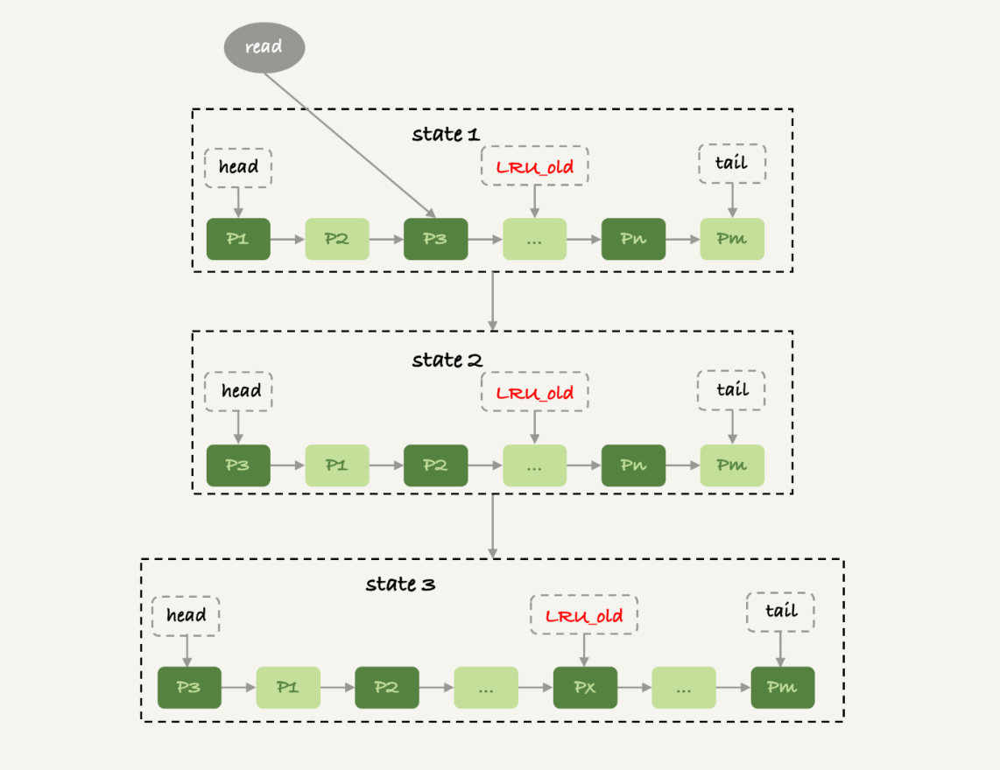

全表扫描对server的影响
一条返回值聚到的sql语句是怎么处理的
假设我们执行下面的语句执行全表扫描，这条sql语句从server到客户端的流程如下
1 | mysql -h$host -P$port -u$user -p$pwd -e "select * from db1.t" > $target_file |
- 结果先写入到net_buffer中，由参数net_buffer_lenght决定（def:16m）
- net_buffer写满后，通过网络接口发送出去
- 接续写入新的数据到net_buffer
- 如果发送函数遇到返回值EAGAIN状态，或者WSAEWOULDBLOCK，说明本地网络栈被写满了，进入等待状态，知道网络栈可用继续写入。
可见mysql对于查询结果的发送是边读取边写的这样防止了大的sql语句一次性读写导致oom
如图所示：

send data to client和sending data的区别
上面发送数据给client过程中sql语句状态会被置为send data to client状态，要和sending data区分开
sending data是当一条sql语句执行时候就被设置为该状态，知道这条语句结束，所以sending data并不能表示这条语句正在往客户端发送数据
当数据继续开始往客户端发送时候数据处于send data to client阶段。
当执行器开始执行sql语句时候，这条sql语句处于sending data阶段
mysql_store_result
一般我们都会采用参数：mysql_store_result直接把查询结果保存到本地，而不是mysql_use_result,读一行处理一行，因为如果一个事务逻辑很复杂很可能要处理很久才会去读下一行
全表扫描对innodb的影响
还记得Mysql更新采用了BUFF_POOL+WAL的顺序写机制替代了，随机写，加速了写的性能么？其实BUFF_POOL的这个机制还加速了查询的性能。比如一个sql语句查询数据的时候，如果数据页在内存中，那么就不用扫描磁盘了，一般一个稳定的线上业务buff_pool的磁盘命中率都会很高我们可以用命令show engine innodb status来查看命中率。
那么如果全表扫描一个很大的表，触发了buff_pool的Lru算法是否很极大的降低buff_pool的命中率，增大磁盘的开销呢？mysql是采用什么策略优化这种情况的呢？
Mysql的lru算法如图：
- mysql吧buff_pool分了young和old代，占比是5:3
- 如果命中的数据页在young代会被移动到链表的head处
- 如果新插入了一个数据页，Px,会淘汰最靠近tail的pm,这时候px会插入到old代的头部；
- 处于old区域的数据页被访问时候，Mysql会有一个策略
- 发现数据页已经在old区存在了1秒以上了，会移动到young
- 反之，不移动，慢慢被淘汰
mysql用这种策略来优化全表扫描，因为全表扫描时候这些数据页会顺序读，所以肯定不会超过1秒，所以不会移动到young，只会在old代慢慢被淘汰，而且淘汰只会限制在old代，对young完全无影响（正常业务的查询）
